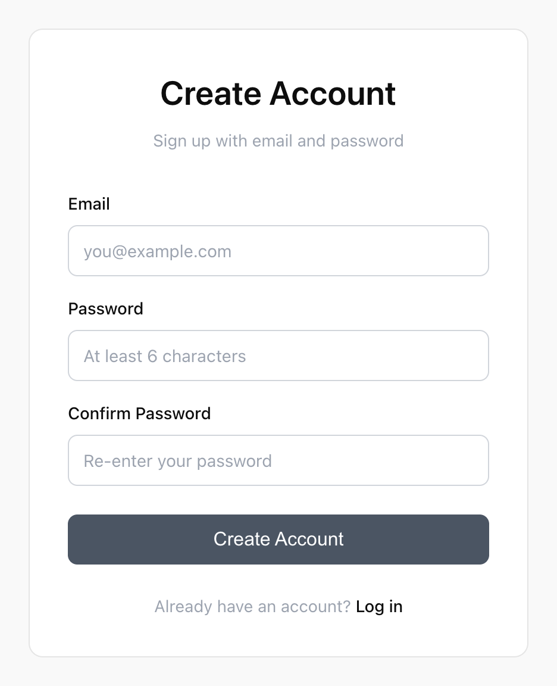
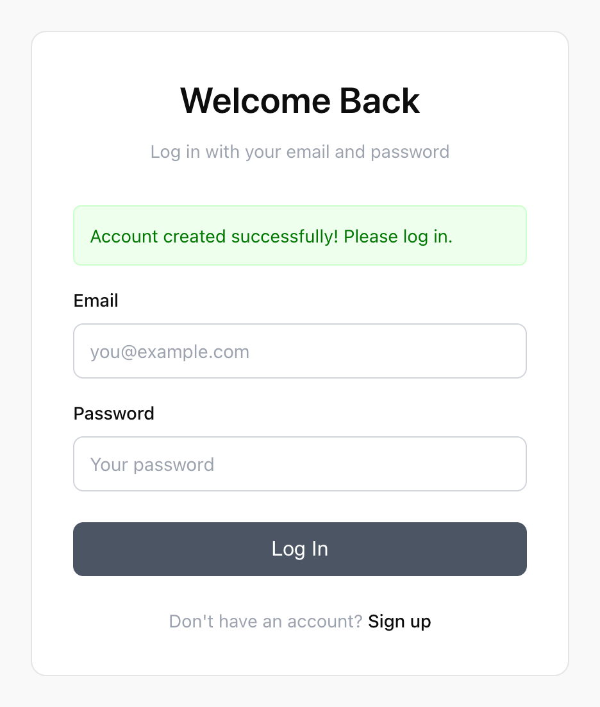
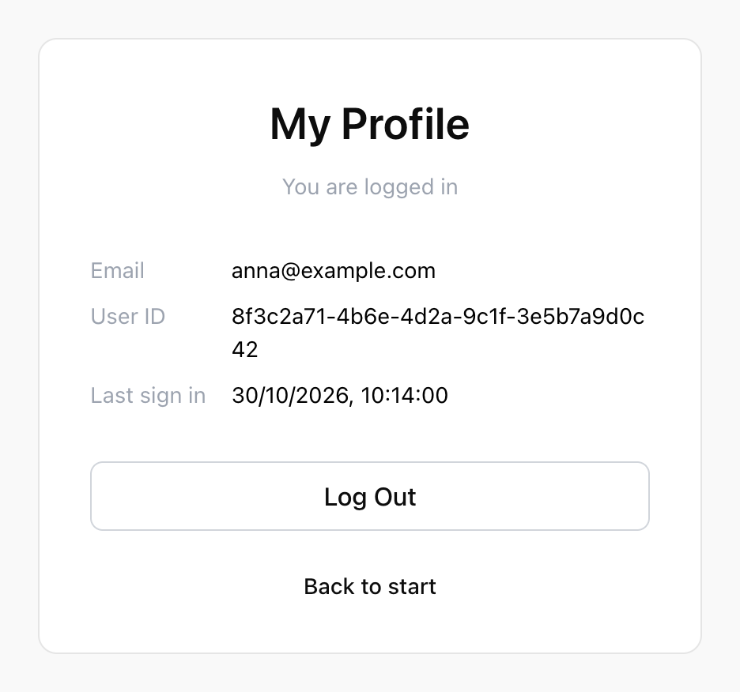

WU-E26A · RACE 10 · 3. november 2026
Hvemspørger?
Jeres token ligger i Local Storage. I dag sender I det med i en header. Først i react-supabase-auth, så i chatbotten med step 15.
GET /api/threads
Host: localhost:3000
Accept: */*
Origin: http://localhost:5173
Authorization: Bearer eyJhbGciOiJFUzI1…
01
Opsamling
Hvor slap
Sidst fik I login til at virke. Fredag tegnede I, hvad der sker, når man logger ind. Vi samler op og ser, hvad der mangler i dag.
Opsamling · det byggede I sidst · øvelse 1-9
Fire sider. Én af dem kræver login
Forsiden, /register og /login kan alle se. /profile kræver login. Er du ikke logget ind, eller logger du ud, bliver du sendt fra /profile til /login
Kan alle se
Kræver login
/ forsiden /register opret en konto /login log ind /profile din profil konto oprettet logget ind ikke logget ind, eller Log Out
Samme billede som øverst i opgaven fra sidst.
Opsamling · løsningen
Sådan ser det ud, når det virker
localhost:5173/register

Øvelse 4-5 signUp()
localhost:5173/login ?registered=true

Øvelse 6-7 signInWithPassword()
localhost:5173/profile

Øvelse 8-9 getUser() · signOut()
Løsningen ligger på GitHub med én branch pr. øvelse ↗
Opsamling · fra fredag · jeres tegninger
Hvad sker der, når man trykker "Log In"?
Tom skabelon: klienten (browseren) sender et request til serveren (Supabase Auth) og får et svar, som ender i Local Storage. Hvert led er et spørgsmål
localhost:5173/login
Klient
Browseren
dit-projekt.supabase.co
Server
Supabase Auth
Hvad sker der i koden?
?
Hvilken fil? Hvilken funktion?
Local Storage
Hvad ligger der bagefter?
Hvem lagde det der?
Hvad sker der her?
?
Hvor bliver passwordet hashet?
Hvad bliver sendt?
?
Kan andre læse passwordet på vejen?
Hvad kommer tilbage?
2-3 grupper viser deres tegning. Hvad var svært at tegne? Bagefter sammenligner vi med vores.
Opsamling · sammenlign med jeres tegning
Tokenets vej ved login
Klienten kalder signInWithPassword i login.jsx og sender email og password til Supabase Auth over HTTPS. Serveren hasher passwordet med samme salt og sammenligner med auth.users. Svaret med access token og refresh token gemmer supabase-js i Local Storage
localhost:5173/login
Klient
Browseren
dit-projekt.supabase.co
Server
Supabase Auth
login.jsx · clientAction
signInWithPassword({
email, password
})
Kører i browseren
Local Storage
sb-…-auth-token
eyJhbGci .eyJzdWIi .SflKxw access_token + refresh_token
auth.users
1. Henter hashen
2. Hasher det indtastede
password med samme salt
3. Passer de? Så et token
✓ Her bliver passwordet hashet
signInWithPassword() sender
POST /auth/v1/token"email": "anna@…",
"password": "hemmelig123"
Klartekst i body. HTTPS krypterer vejen
200 OK · access_token · refresh_token
eyJhbGci .eyJzdWIi .SflKxw supabase-js gemmer det selv
Passwordet forlader browseren én gang. Bagefter er det tokenet, der beviser, hvem I er.
Opsamling · spørgsmålene fra fredag
Hvad svarede I?
Spørgsmål 1
Hvad kan man gøre, hvis man får fat i jeres anon key ?
Det samme som enhver anden besøgende. Den står i jeres frontend-kode, så alle kan finde den alligevel.
Spørgsmål 2
Hvad kan man gøre, hvis man får fat i en brugers access token ? Og hvor længe?
Man er brugeren , indtil tokenet udløber. Det står i exp. Højst en time.
Spørgsmål 3
Hvorfor kan backenden ikke stole på den validering, I har lavet i clientAction?
Den kører i browseren. Alle kan sende et request uden om den , fx fra Thunder Client.
Spørgsmål 1 og 2 kommer igen i øvelse 10. Spørgsmål 3 kommer til sidst i dag.
Opsamling · sidst og i dag · react-supabase-auth
Sidst fik I et token. I dag sender I det selv
Sidst · øvelse 1-9
I dag · øvelse 10-12
react-supabase-auth i browseren logger ind hos Supabase Auth og får et token, som ligger i Local Storage. getUser() sender tokenet for jer. I dag bygger I selv requestet til /auth/v1/user med tokenet i en Authorization-header
localhost:5173/profile
react-supabase-auth
Kun frontend. Ingen backend
/register øvelse 4-5
/login øvelse 6-7
/profile øvelse 8-9
Local Storage
sb-…-auth-token
eyJhbGci .eyJzdWIi .SflKxw dit-projekt.supabase.co
Supabase Auth
auth.users
email encrypted_password
anna@… $2a$10$Xk9…
bo@… $2a$10$Qp3…
Hasher passwords
Udsteder tokens
Tjekker signaturen
signUp() · signInWithPassword()
eyJhbGci .eyJzdWIi .SflKxw getUser()
sender tokenet for jer. I ser ikke hvordan
GET /auth/v1/userapikey: sb_publishable_…
Authorization: Bearer eyJhbGci …
200 OK + brugeren
I bygger det selv · fetch() → apiFetch()
getUser() sendte tokenet for jer. Men hvad med chatbotten? Sender den tokenet til jeres API?
Opsamling · fredagens test · chatbotten · to og to · 5 minutter
Står tokenet i requestet til jeres API?
Start frontend og backend. Log ind i chatbotten
Åbn Network -fanen, og genindlæs
Klik på threads. Det er requestet til localhost:3000
Find Request Headers . Står der en Authorization?
Log ind som en anden bruger i et inkognitovindue. Ser I de samme tråde?
Elements Console Network Application
threads
layout.jsx
home.jsx
Headers Response
Request URL http://localhost:3000/api/threads
Request Method GET
Status Code 200 OK
Request Headers
Accept */*
Origin http://localhost:5173
Referer http://localhost:5173/
User-Agent Mozilla/5.0 …
Ingen Authorization. Tokenet bliver i browseren
Frontenden ved, hvem I er. Men det fortæller den ikke jeres API.
Opsamling · sidst og i dag · chatbotten
I dag kommer tokenet med til jeres API
Fra step 11-13
Sidst · step 14
I dag · step 15
Chatbotten logger ind hos Supabase Auth i step 14 og får et token, som ligger i Local Storage. Den henter tråde fra Express uden token. I dag sender den tokenet til Express i en Authorization-header. Express læser det ikke før step 16
Supabase-projektet
Supabase Auth
auth.users
Udsteder tokens
Postgres
threads · messages
Alle tråde. Ingen
WHERE user_id endnu
localhost:5173/chat/…
Chatbot
frontend/
/login /register step 14
/ /chat/… step 11-13
Local Storage
eyJhbGci .eyJzdWIi .Sfl localhost:3000
Express API
backend/
/api/threads
step 14 · signUp() · signInWithPassword()
eyJhbGci .eyJzdWIi .Sfl fetch · intet token
SQL
GET /api/threadsAuthorization: Bearer eyJ …
apiFetch() · step 15
Læser det ikke endnu
Express får tokenet i dag. Det bliver først tjekket i step 16.
02
Hvordan ved backenden, hvem du er?
HTTP husker
Hvert request står alene. Det skal selv fortælle, hvem det kommer fra.
Kender I fra Node og Express · HTTP
Et request ud. Et response tilbage
Browseren sender POST /api/threads med headerne Content-Type og Origin og en JSON-body. Express svarer 201 Created med Content-Type og Access-Control-Allow-Origin. express.json() læser Content-Type, cors() sætter Access-Control-Allow-Origin, og browseren tjekker den
localhost:5173
Klient
Browseren
localhost:3000
Server
Express API
POST /api/threadsHeaders
Host: localhost:3000
Content-Type: application/json 1
Origin: http://localhost:5173 2
Body
{"title":"Pizza","content":"Hej"}
201 CreatedHeaders
Content-Type: application/json 1
Access-Control-Allow-Origin: http://localhost:5173 2
Body
{"thread":{"id":7,"title":"Pizza"},"message":{…}}
1 sætter I i fetch()
2 sætter browseren selv
1 express.json() læser2 cors() læser
response.json() læser body2 browseren tjekker den
1 response.json() 2 cors() sætter
En header er et navn og en værdi. I dag kommer der én til i requestet: Authorization.
Kender I fra REST API · princip 02 · stateless
Serveren husker intet mellem to requests
Stateless: hvert request indeholder al nødvendig information. Serveren gemmer ikke klientens tilstand mellem requests.
Brugeren åbner Anna, åbner Bo og sletter Bo. Hver handling bliver et nyt request med id'et i URL'en, fordi serveren intet husker mellem dem. I dag sender chatbotten tokenet med i en header på samme måde, så serveren kan se, hvem der spørger
localhost:5173
Klient
Browseren
localhost:3000
Server
Express API
Åbn Anna
GET /students/1
id 1 → Anna
Åbn Bo
GET /students/2
id 2 → Bo
Slet Bo
DELETE /students/2
id 2 → slettet
Åbn chatbotten
GET /api/threads · Authorization: Bearer eyJ…
Hvem? tokenet
Id'et skal med i hvert request. Det samme gælder tokenet. Sliden fra REST API ↗
Hvert request står alene
Samme browser. API'et ser tre fremmede
Nuuden token
GET /api/threadsingen Authorization Hvem er du?
POST /api/threadsingen Authorization Hvem er du?
DELETE /api/threads/7ingen Authorization Hvem er du?
Efter step 15tokenet i hvert request
GET /api/threadsBearer eyJhbGci… Det er Anna
POST /api/threadsBearer eyJhbGci… Det er Anna
DELETE /api/threads/7Bearer eyJhbGci… Det er Anna
Session At I er logget ind over mange requests. Supabase-klienten henter selv et nyt access token med refresh tokenet, når det gamle udløber.
Ligesom armbåndet på festivalen: I viser det ved hver scene, ikke kun ved indgangen.
Request-vejen · før step 15
Frontenden ved, hvem I er. Backenden gør ikke
Browseren Ved, hvem I er localStorage
sb-…-auth-token ✓ access_token med sub
→fetch
Requestet GET /api/threads fetch(url)
// intet token med Tokenet bliver i browseren. →
Express API Ved ikke, hvem I er Intet token at tjekke. Svarer alle, der spørger. ✗ ingen bruger
→SQL
Postgres Alle tråde SELECT …
FROM threads Ingen WHERE user_id.
Det var her, vi slap sidst. I dag flytter tokenet ind i requestet.
Hvor vi er på vej hen · step 15-18
Hvor ender chatbotten?
Kun /login og /register kan ses uden login. Alle chat-siderne i layout.jsx kræver login, og du ser kun dine egne tråde. Svarer API'et 401, bliver du sendt til /login
Kan alle se
/register register.jsx
/login login.jsx
konto oprettet
Kræver login
layout.jsx med sidebar
kun dine egne tråde
/ home.jsx
/chat/new chat-new.jsx
/chat/:threadId chat-thread.jsx
/chat/:threadId/edit chat-thread-edit.jsx
logget ind
API'et svarer 401
15 I dag: tokenet sendes med til backenden 16 Backenden kræver det og tjekker det med getUser() 17 I ser kun jeres egne tråde 18 Svarer API'et 401, sendes I til /login
Step 15 er første skridt. Backenden kan ikke kræve et token, som frontenden ikke sender.
03
Tokens, headers og Bearer · øvelse 10
Et request er mere
Tokenet skal med i en header. I kender allerede én.
Headers
Headers er ekstra information i requestet
// Kender I fra POST til jeres API
await fetch(`${apiUrl}/api/threads` , {
method: "POST" ,
headers: {
"Content-Type" : "application/json" ,
Authorization: `Bearer ${token}` ,
},
body: JSON.stringify({ title, content }),
});→
Linje POST /api/threads
Headers Content-Type: application/json
Authorization: Bearer eyJhbGci…
Body {"title":"Pizza","content":"Hej"}
En header er et navn og en værdi. I fetch() skriver I dem i objektet headers.
Repetition fra sidst · token
Hvad er et token?
Én gang Du får Bagefter
Festival
Billet og ID Tjekkes ved indgangen
→
Armbånd Gælder hele festivalen
→
Vis armbåndet Så kommer du ind ved scenen uden ID
Login
Email og password Supabase tjekker det mod hashen signInWithPassword() · øvelse 6
→
Token eyJhbGci . eyJzdWIi . Ht0NZgcq Gælder en time Local Storage · øvelse 7
→
Send tokenet Så ved Supabase, hvem du er, uden password getUser() · øvelse 8
Et token er en tekststreng, der beviser, hvem du er, i en begrænset tid. Et request fortæller ikke selv, hvem det kommer fra. Derfor sender appen tokenet med i stedet for dit password.
Sidst sendte getUser() tokenet for jer. I dag gør I det selv. Det, I sender, er et JSON Web Token.
Repetition fra sidst · JWT
Hvad er et JSON Web Token?
JSONdet format, jeres API sender Websendes med i requests Tokenbeviser, hvem du er
Et JSON Web Token (JWT) er et token, hvor oplysningerne om dig står som JSON, underskrevet af Supabase. Alle kan læse det, men ingen kan rette i det.
Alle kan læse det Det er kun kodet, ikke krypteret. Der må aldrig stå hemmeligheder i det.
Ingen kan rette i det Ret ét tegn, og signaturen passer ikke længere.
Udløbstiden står i det Feltet exp siger, hvornår tokenet holder op med at virke.
Jeres access token er et JWT. Det er det, der står efter Bearer i dag.
Repetition fra sidst · det, jwt.io viser jer
Tre dele, adskilt af punktummer
eyJhbGciOiJFUzI1NiIsImtpZCI6ImI3YzQxZjJlLTlhM2QtNGM1NS04ZTIxLTZmMGQzYTliN2UxNCIsInR5cCI6IkpXVCJ9 . eyJpc3MiOiJodHRwczovL3F3bXprY3locHJsYnRueHNkZmdhLnN1cGFiYXNlLmNvL2F1dGgvdjEiLCJzdWIiOiI4ZjNjMmE3MS01ZDRlLTRiOWEtOWMxZi0yZTZkN2EwYjNjNDUiLCJhdWQiOiJhdXRoZW50aWNhdGVkIiwiZXhwIjoxNzkzMTgyMzIwLCJpYXQiOjE3OTMxNzg3MjAsImVtYWlsIjoiYW5uYUBleGFtcGxlLmNvbSIsInBob25lIjoiIiwiYXBwX21ldGFkYXRhIjp7InByb3ZpZGVyIjoiZW1haWwiLCJwcm92aWRlcnMiOlsiZW1haWwiXX0sInVzZXJfbWV0YWRhdGEiOnsiZW1haWwiOiJhbm5hQGV4YW1wbGUuY29tIiwiZW1haWxfdmVyaWZpZWQiOnRydWUsInBob25lX3ZlcmlmaWVkIjpmYWxzZSwic3ViIjoiOGYzYzJhNzEtNWQ0ZS00YjlhLTljMWYtMmU2ZDdhMGIzYzQ1In0sInJvbGUiOiJhdXRoZW50aWNhdGVkIiwiYWFsIjoiYWFsMSIsImFtciI6W3sibWV0aG9kIjoicGFzc3dvcmQiLCJ0aW1lc3RhbXAiOjE3OTMxNzg3MjB9XSwic2Vzc2lvbl9pZCI6ImQyYTllNmIxLTdjM2YtNGU4YS1iNWQwLTkxZjRjMmU3YTNiNiIsImlzX2Fub255bW91cyI6ZmFsc2V9 . Ht0NZgcqwrWsTc1eKy2kL4_XDpFokNVWx7ojlo3jV1XWPIDXX7PByaTVgAKGQNb6ruJf1HL_fFaHGqEvjX2hOQ
Header {
"alg" : "ES256",
"kid" : "b7c41f2e-…",
"typ" : "JWT"
} Hvordan tokenet er underskrevet. Ældre projekter: HS256. Payload {
"sub" : "8f3c2a71-5d4e-4b9a-9c1f-2e6d7a0b3c45" ,
"email" : "anna@example.com",
"role" : "authenticated",
"iat" : 1793178720,
"exp" : 1793182320,
…
} Data om brugeren. Hvert felt kaldes en claim . Signatur Ht0NZgcqwrWs
Tc1eKy2kL4_X
DpFokNVWx7oj
… Lavet af Supabase med en hemmelig nøgle, der aldrig er i browseren.
header.payload.signatur . jwt.io farver de tre dele på samme måde.
Repetition fra sidst · access token og refresh token
Et access token lever kun en time
access_token #1 I logger ind kl. 10.12
access_token #2 Hentet med refresh_token
access_token #3 … og sådan fortsætter det
10.12 · iat 11.12 · exp 12.12
↻ Lige før exp bruger supabase-js refresh_token
↻ Igen en time senere
✕ signOut() sletter begge
Access token Det JWT, I kiggede i. Siger, hvem I er. Bliver det stjålet, virker det kun til exp.
Refresh token Bruges kun til at hente et nyt access token. Det klarer Supabase-klienten selv.
Tokenet i Local Storage bliver skiftet ud hver time. Derfor henter I det frisk med getSession() ved hvert request.
Definition
Hvad er et Bearer token?
Authorization:headerens navn Bearer"ihændehaver" eyJhbGci…jeres access_token
Et Bearer token giver adgang til den, der har det. Ingen spørger efter password eller ID. Derfor skal det holdes hemmeligt, og derfor udløber det.
Kender I fra DOB 11 Jeres Groq-nøgle "Authorization" : `Bearer ${apiKey}` Backenden beviser over for Groq, at den må bruge API'et. I dag Brugerens access token Authorization: `Bearer ${token}` Frontenden beviser over for API'et, hvilken bruger der spørger.
Samme header, samme format. Forskellen er, hvem der beviser hvad over for hvem.
Øvelse 10 · trin 2 · det svarer Supabase
Én header ad gangen. Hver header retter én fejl
Headers på fetch Status Supabase svarer
1 ingen headers
→ 401 No API key found in requestHvilket projekt hører det til?
2 apikey
→ 401 This endpoint requires a valid Bearer tokenKender projektet. Men hvem er du?
3 apikey Authorization: Bearer eyJ…
→ 200 { "id": "8f3c2a71-…", "email": "anna@…" }Kender projektet og brugeren
4 apikey Bearer eyJhbGX i…
→ 403 invalid JWT: … signature is invalidÉt tegn rettet. Signaturen passer ikke
Det er præcis det request, getUser() sendte for jer i øvelse 8. Find begge i Network-fanen.
Svaret på spørgsmål 1 og 2
apikey eller Authorization?
apikeyAuthorizationSvarer på
Hvilket projekt?
Hvilken bruger?
Hvem har den?
Den samme for alle brugere
Forskellig for hver bruger
Hvor ligger den?
.env, og derfra i jeres frontend-kode
Local Storage, efter login
Hvis den bliver stjålet
Det samme som enhver besøgende
Man er brugeren, indtil exp
Jeres anon key er offentlig. Et access token er det ikke.
Øvelse 10 · trin 3 · jeres eget fetch
Tre situationer. Kun én af dem viser siden
Hvem Authorization clientLoader Supabase svarer Så
Logget ind almindeligt vindue
Bearer eyJhbGci… → fetch() →
✓ 200 → return { user }. Siden vises
Inkognito session er null
Bearer undefined → fetch() →
✗ 403 malformed → redirect("/login")
Rettet token ét bogstav ændret
Bearer eyJhbGX i… → fetch() →
✗ 403 signature → redirect("/login")
I tjekker kun response.ok. Det er false ved alt andet end 200-299.
Øvelse 10Hands-on · Øvelse 10
Send tokenet selv
Åbn øvelsen på GitHub ↗
Trin 1: hent tokenet med getSession() i clientLoader på /profile, og log detTrin 2: kald /auth/v1/user med fetch. Tilføj én header ad gangen, og læs svaretTrin 3: fjern getUser(), og brug jeres eget svar. redirect("/login"), hvis response.ok er falseMangler I øvelse 8-9? Brug degit-kommandoen under "Kom i gang"
Test: logget ind ser I jeres profil. I inkognito og med et rettet token bliver I sendt til /login.
04
apiFetch · øvelse 11-12
Skriv det
Jeres clientLoader ved nu, hvad URL'en er, hvor nøglen ligger, og hvordan tokenet skal med. Det skal alle sider vide.
Chatbotten før step 15
Syv fetch-kald i fire filer
const apiUrl = import.meta.env.VITE_API_URL;
fetch(`${apiUrl} /api/threads`)
const apiUrl = import.meta.env.VITE_API_URL;
fetch(`${apiUrl} /api/threads/${threadId}`, {
method: "DELETE" })const apiUrl = import.meta.env.VITE_API_URL;
fetch(`${apiUrl} /api/threads/${params.threadId}`)
fetch(`${apiUrl} /api/threads/…/messages`)
const apiUrl = import.meta.env.VITE_API_URL;
fetch(`${apiUrl} /api/threads/…/messages`, {
method: "POST" })const apiUrl = import.meta.env.VITE_API_URL;
fetch(`${apiUrl} /api/threads`, {
method: "POST" })chat-thread-edit.jsx 1 kald const apiUrl = import.meta.env.VITE_API_URL;
fetch(`${apiUrl} /api/threads/${params.threadId}`, {
method: "PATCH" })
VITE_API_URL står seks steder, og fetch syv. Skal tokenet med, skal I rette dem alle.
DRY · Don't Repeat Yourself
Det, der gentages, står ét sted
Express · data-modulet fra RACE 6
// data-helpers.js
export async function loadStudents() {
const data = await fs.readFile(
"./data/students.json" , "utf8"
);
return JSON.parse(data);
}
// server.js
const students = await loadStudents() ;Routes ved ikke, hvor filen ligger. Filstien og JSON.parse står ét sted.
React · i dag
// lib/apiFetch.js
export async function apiFetch(path, options) {
// URL, apikey og token
return fetch(url + path, {
...options, headers,
});
}
// routes/profile.jsx
const response = await apiFetch("/auth/v1/user") ;Siderne ved ikke, hvordan tokenet kommer med. URL, apikey og token står ét sted.
Skal noget ændres, ændrer I det ét sted. Alle, der kalder funktionen, får det med.
Wrapper-funktion · øvelse 11
apiFetch er fetch med URL, apikey og token sat på
export async function apiFetch(path, options = {}) {
const {
data: { session },
} = await supabase.auth.getSession();1
const token = session?.access_token;
const headers = {
...options.headers,
apikey: supabaseAnonKey,
};2
if (token) {
headers.Authorization = `Bearer ${token}` ;
}3
return fetch(`${supabaseUrl}${path}` , { ...options, headers });4
}
Hent tokenet fra Local Storage. Er I logget ud, er session null Behold de headers, siden selv sendte med, og læg apikey på Authorization kun, hvis der er et token. Ellers sender I Bearer undefinedKald det rigtige fetch() med hele URL'en, og returnér svaret
En wrapper-funktion kalder en anden funktion og lægger noget til. Den tager de samme options som fetch().
...options.headers og { ...options, headers }Sidens headers plus apiFetch' egne
// Fx når chatbotten opretter en tråd
apiFetch("/api/threads" , {
method: "POST" ,
headers: {
"Content-Type" : "application/json" ,
},
body: JSON.stringify({ title, content }),
});→
Det, fetch() får
method: "POST" fra options
Content-Type fra siden
apikey fra apiFetch
Authorization fra apiFetch
body: "{…}" fra options
Fjern ...options.headers, og Content-Type forsvinder. Det er test 5 i øvelse 11.
Hvorfor getSession() i apiFetch?
getSession() læser. getUser() spørger
getSession()getUser()Hvad gør den?
Læser tokenet fra Local Storage
Sender tokenet til Supabase
Request?
Nej. Intet i Network-fanen
Ja. /auth/v1/user
Tjekker signaturen?
Nej
Ja
Hvem bruger den?
Frontenden, der bare sender tokenet videre
Den, der skal stole på tokenet. Snart jeres backend
Frontenden behøver ikke tjekke tokenet. Det gør den, der modtager det.
Øvelse 12 · bonus
Ingen clientLoader? Så useEffect
En route · fx /profile
export async function clientLoader() {
const response =
await apiFetch("/auth/v1/user" );
…
}Data hentes, før siden vises.
En component · fx SidebarFooter
const [email, setEmail] = useState(null );
useEffect(() => {
// getSession() og setEmail(...)
}, []);Kan ikke have en clientLoader. Data hentes, når componenten bliver vist. Som users i my-first-react-app.
I øvelse 12 viser I emailen på forsiden. I chatbotten står den i SidebarFooter.
Øvelse 11-12Hands-on · Øvelse 11-12
apiFetch og emailen på forsiden
Åbn øvelsen på GitHub ↗
Øvelse 11: opret app/lib/apiFetch.js ud fra skabelonenBrug den i clientLoader på /profile. Ét kald: apiFetch("/auth/v1/user")
Find apikey og Authorization under Request Headers. Prøv også i inkognito
Øvelse 12 · bonus: vis emailen og et link til /profile på forsiden med useEffect
Øvelse 10 og 11 er nok til at lave step 15. Øvelse 12 svarer til emailen i sidebaren.
05
Fra øvelserne til step 15
Det samme igen,
I kender alle delene af step 15 nu. Resten af dagen og i morgen sætter I dem ind i chatbotten.
Step 15 · Send bearer tokens in requests
Step 15 er det, I har lavet i dag
Delopgave i step 15 Det har I lavet i Husk i chatbotten
1 Create apiFetch helper Øvelse 11 Brug VITE_API_URL, og drop apikey. Jeres API skal kun have tokenet
2 Update all loaders and actions Øvelse 11 Fire filer, syv kald: layout.jsx, chat-thread.jsx, chat-new.jsx og chat-thread-edit.jsx
3 Add logout functionality Øvelse 9 og 12 Logout i layoutets clientAction med intent="logout". Emailen står i SidebarFooter
Opgaven Chatbot step 15 ↗
Chatbot step 15
Det er anderledes i chatbotten
react-supabase-auth
Chatbot · step 15
URL
VITE_SUPABASE_URL
VITE_API_URL, jeres eget API
apikey
Ja. Supabase skal vide, hvilket projekt
Nej. Jeres API skal kun have tokenet
Log ud
clientAction i profile.jsx
clientAction i layout.jsx med intent="logout", ved siden af "delete"
Emailen
useEffect i home.jsx
useEffect i SidebarFooter. Erstatter "Batman"
Er I ikke færdige med step 14, så brug degit-kommandoen sidst i opgaven, og commit, før I ændrer noget.
Når I er i mål · Network-fanen
Hvorfor står der to requests til threads?
Browseren localhost:5173
OPTIONS /api/threads →
"Må jeg sende en Authorization-header fra localhost:5173?" ← 204 · Access-Control-Allow-Headers: authorization
cors() i jeres backend svarer jaGET /api/threads · Authorization: Bearer eyJ… →
Først nu bliver det rigtige request sendt Express API localhost:3000
Det er CORS igen. Et andet origin og en Authorization-header får browseren til at spørge først.
Request-vejen · efter step 15
Tokenet når frem. Ingen kigger på det
Browseren Ved, hvem I er apiFetch("/api/threads" ) ✓ access_token med sub
→fetch
Requestet GET /api/threads Authorization:
Bearer eyJhbGci… ✓ tokenet er med
→
Express API Kigger ikke på det Headeren er der. Ingen kode læser den endnu. ✗ ingen bruger
→SQL
Postgres Alle tråde SELECT …
FROM threads Ingen WHERE user_id.
To brugere ser stadig de samme tråde efter step 15. Det er forventet.
Step 15Hands-on · resten af dagen og onsdag
Step 15 i chatbotten
Åbn opgaven på GitHub ↗
Øvelse 1: find de tre ting, der mangler. Ingen kode. Mangler step 14? Se "Kom i gang"Øvelse 2-3: lav apiFetch, og brug den i alle fire filer. Commit efter hver øvelseØvelse 4: log ud med × i sidebaren, og vis jeres email i stedet for "Batman"Find Authorization: Bearer ... og et OPTIONS i Network-fanen. Push til GitHub
Sidder I fast, så sammenlign med commit'et til øvelsen. Tabellen står sidst i opgaven.
06
Hvad mangler stadig?
Send et request
Frontenden sender tokenet. Men hvad med alle andre?
Prøv selv · Thunder Client
Thunder Client får stadig alle tråde
GET http://localhost:3000/api/threads
Query Headers Auth Body
Ingen Authorization-header
Status: 200 OK Size: 1.2 KB
[
{ "id" : 12, "title" : "Min hemmelige tråd" , … },
{ "id" : 11, "title" : "Annas tråd" , … },
{ "id" : 3, "title" : "How to learn programming?" , … },
…
]
Frontenden sender tokenet frivilligt. Ingen tvinger nogen til det.
Listen fra sidst
Hvilke huller lukker step 15?
1 Chatbotten ved ikke, hvem der bruger den Lukket · step 14 og 15 2 Alle nye tråde får alices id Step 17 3 Thunder Client får alle tråde uden at logge ind Step 16 4 Alle ser alles tråde Step 17 5 Alle kan omdøbe og slette alles tråde Step 17
Step 15 lukker kun det første alene. Men uden step 15 kan backenden ikke lukke resten.
Næste skridt · step 16 med MAGL
Backenden spørger Supabase, ligesom øvelse 10
Requestet GET /api/threads Authorization:
Bearer eyJhbGci… →
Express · requireAuth Middleware før hver route getUser(token) Intet token, eller passer signaturen ikke: 401 . →
Supabase Auth /auth/v1/user Det samme request, I byggede i øvelse 10. ✓ signaturen passer
→
Route handleren Kender jeres id req.userId =
user.id Samme id som sub i tokenet. Nu ved API'et, hvem I er.
Supabase svarede 403 på jeres rettede token. Jeres backend svarer 401. Det er den, chatbotten skal reagere på i step 18.
Resten af ugen
Step 15 i dag. Test og deployment bygger på den
Tirsdag 3/11 Tokenet med i en header react-supabase-auth, øvelse 10-12. Bagefter går I i gang med step 15 i chatbotten.
Resultat Alle dele af step 15, én ad gangen
Onsdag 4/11 Bliv færdig med step 15 Lav de øvelser, I ikke nåede. Lav step 15, og commit efter hver delopgave.
Husk Push til GitHub, når I er færdige
Torsdag 5/11 Test og kvalitetssikring Fra user story til testscenarier. I optager Playwright-tests af jeres chatbot.
Kræver Step 15, og at chatbotten kører lokalt
Fredag 6/11 Deployment I deployer chatbotten til Render og Netlify fra jeres repo.
Kræver Step 15 er pushet til GitHub
Målet: step 15 er færdig og pushet onsdag aften.
Opsamling
Det kan I nu
Forklare, hvorfor hvert request selv skal sige, hvem det kommer fra
Sende et token i en Authorization-header med fetch()
Forklare forskellen på apikey og Authorization, og hvad der sker, hvis de bliver stjålet
Samle gentaget kode i en wrapper-funktion, apiFetch
Vælge mellem getSession() og getUser()
Finde tokenet og OPTIONS-requestet i Network-fanen
Arbejd videre
Opgave, løsning og opslagsværker